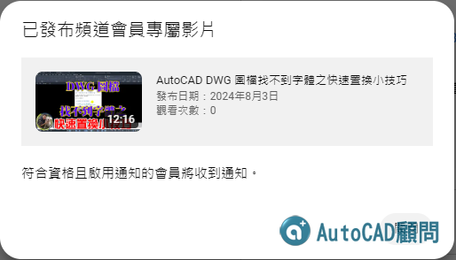

📢 Youtube 頻道會員
新增專屬影片上架
🚨 DWG 圖檔找不到字體之快速置換小技巧

㊙️加入 Youtube頻道會員 可觀看專屬影片
加入一個月只要NT15元 歡迎支持我們製作更多優質教學😆
👇延伸閱讀👇
[報告]DWG圖檔找不到大字體(SHX檔)之「替代大字體」解決方案
https://www.autocad-tw.com/t11472-topic
[互助]字體檔分享交流~
https://www.autocad-tw.com/t18145-topic
👇取得更多資源👇
🍎快加入贊助A取得論壇外掛程式👇
https://www.autocad-tw.com/t14746-topic
🍎快加入專屬B取得更多好康🍎